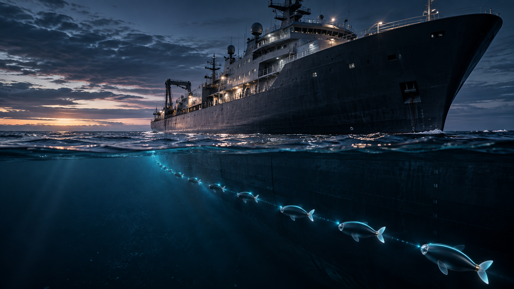
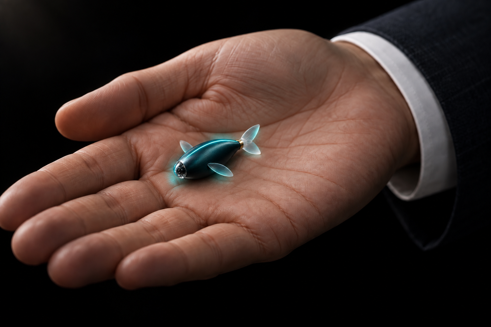
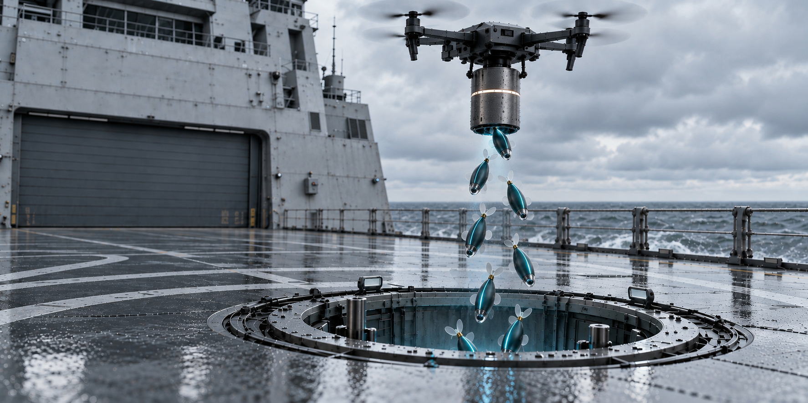
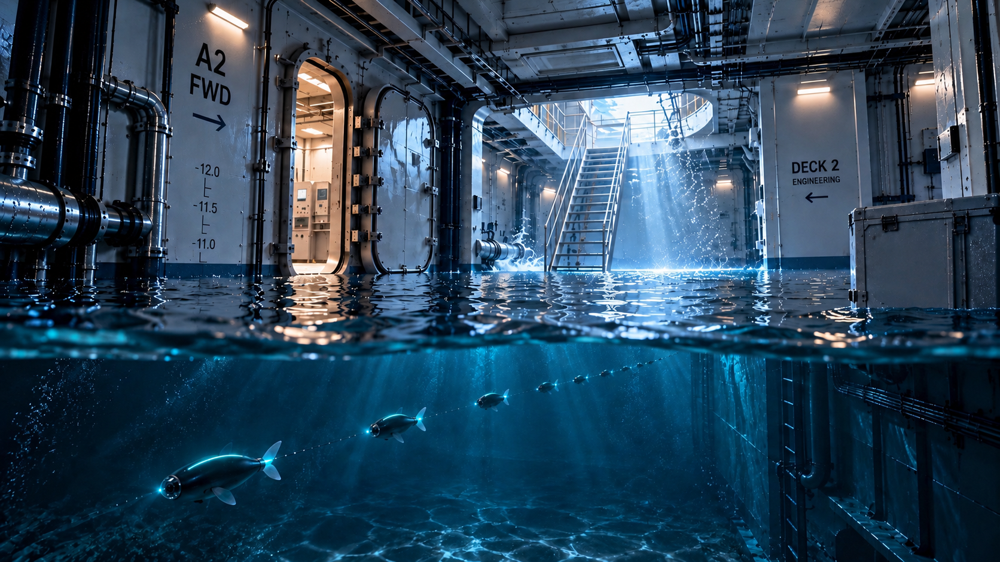
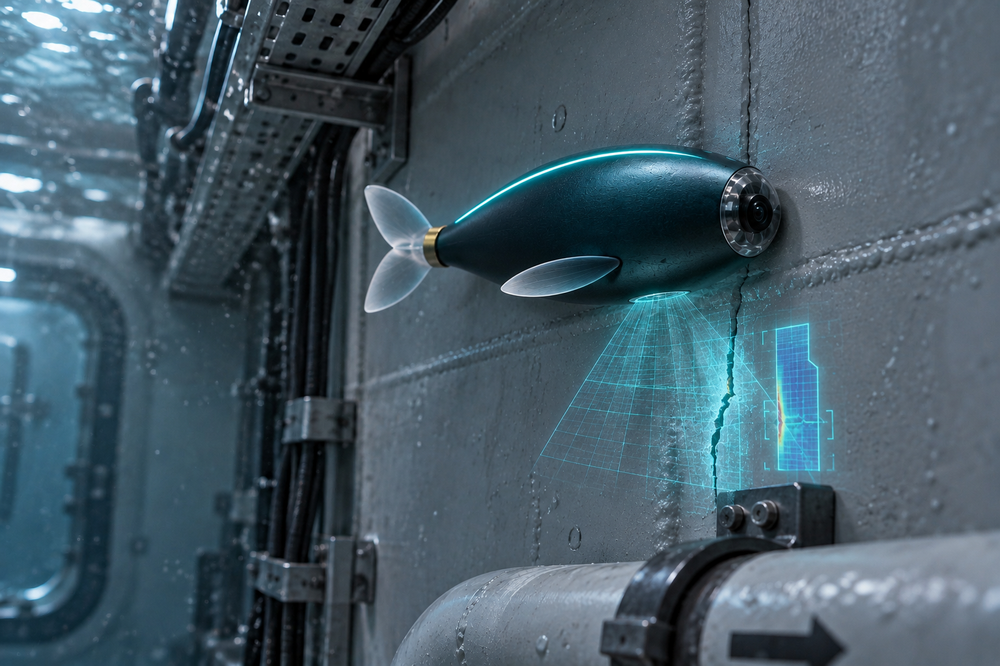
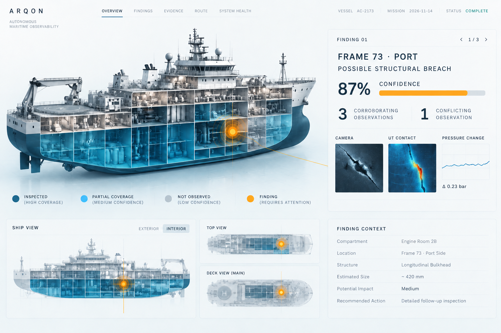
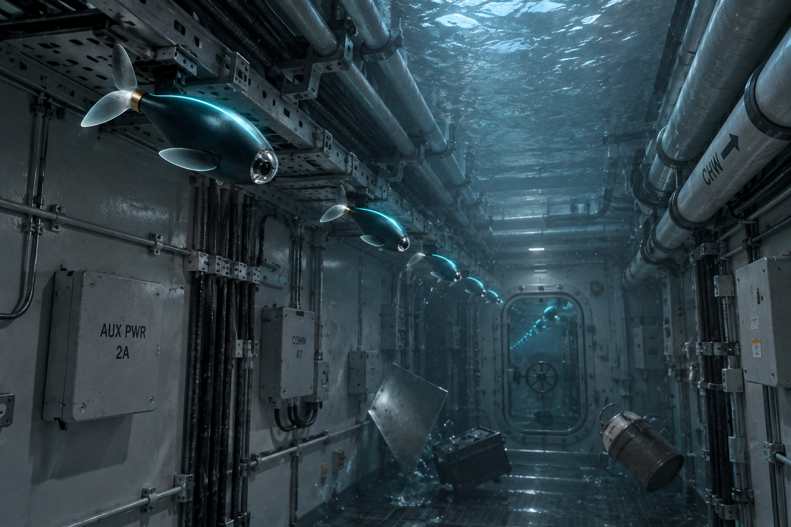
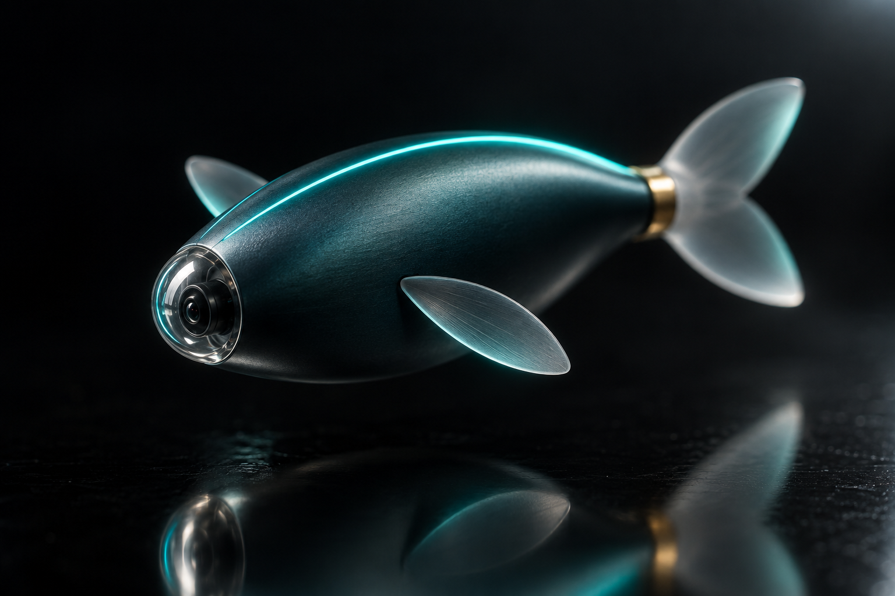

SHOAL
Autonomous observability below the waterline.
A SCHWARMWÄCHTER PRODUCT

Autonomous observability below the waterline.
A ship can survive the strike — and still make its interior inaccessible. Before recovery begins, someone has to know what happened inside.

Small enough for the spaces conventional machines were never built to enter.

A swarm enters through existing access points and casualty-created openings — without putting a person inside.
They become it.

Each node only needs to reach the next.

See · dock · measure · relay

The intelligence that decides what to believe is.
Partial observations. Conflicting sensors. Failed nodes. One uncertainty-aware world model — the same one that tells you a drone is coming before it hits, and what it did after.

Ports, energy terminals, offshore assets and the vessels that serve them — observable from the inside, even when access, communications and human intervention are constrained.

Schwarmwächter is assembling the engineering, maritime partnerships and capital required to take SHOAL from architecture to sea.